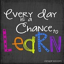
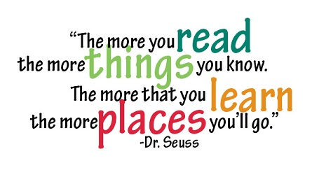

Mrs Wheeler's Classroom
Mrs Wheeler's ClassroomWe read, write, build, experiment, sing, laugh, vote, paint, hypothesize, share, practice, count, play, explore, measure, draw, explain, wonder, discover, and learn together in 3/4!
This website is designed to be a resource for primary children, parents and educators. Our website is a helpful, informative and interactive place to visit.

Parents and Children
Thank you for visiting our classroom website. I hope you will visit often and that you find it to be a great source of information about your child's school year.
If you are looking for information about our classroom, please visit Our Classroom. There are online game links for children in Just for Kids!
Teachers
If you are a teacher and are looking for ideas and activities to use in your classroom
Welcome!
Please visit Useful Links to find links that may be helpful.
About Me....
My name is Jacinta, but my students know me as Mrs Wheeler! I have taught various grades but 3/4 is my favourite!! I love searching for new activities to increase student engagement and promote progress along the Continuums. I also LOVE coffee!!
